WiSHABI
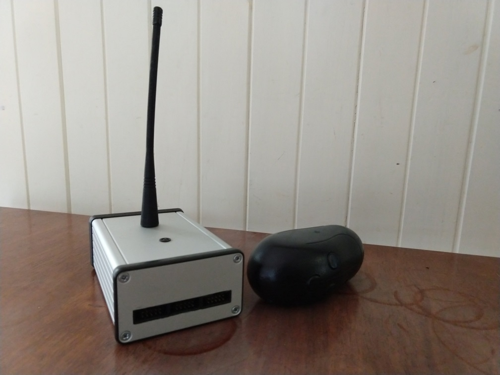{kind=link}
WiSHABI (WIreless Single-Handed Accelerometer-based Interface) is the project I created for completion of my university course. It was my first real exposure to programming microcontrollers and was a significant learning experience.
The hardware consists of two units:
- Transmitter
- Atemega8 AVR microcontroller.
- ADXL330 three-axis accelerometer.
- Battery pack with charge controller.
- 433.92MHx serial transmitter module.
- Receiver
- Atemega8 AVR microcontroller.
- USB Connector.
- Detachable LED grid display.
- 433.92MHx serial receiver module.
A user of WiSHABI would connect the receiver into a USB port and then the transmitter can be used to as an input device. It would switch between two modes - mouse and keyboard.
In mouse mode the cursor would be moved by the tilting motion of the transmitter and thumb buttons used for left- and right-click.
To type in keyboard mode, the unit would be pointed into one of nine sectors in a 3x3 grid then click to scroll through characters similar to the 3x3 grid of a mobile phone keypad (this was pre-touchscreen smartphones!).
The receiver unit connects to a PC via a USB-B connecor. The ATmega8 doesn't have a USB peripheral, so the USB HID implementation was implemented with V-USB.
An aluminium enclosure was used for the receiver unit and a broken cordless screwdriver body was re-purposed for the transmitter.
The transmitter ran off batteries but would still operate when tethered to a plug-pack for charging.
In addition to the photo gallery below, I also archived the following resources:
 Report Report(pdf) |
 Code Code(gzipped tar) |
 Keyboard Demo Keyboard Demo(mp4) |
 Mouse Demo 1 Mouse Demo 1(mp4) |
 Mouse Demo 2 Mouse Demo 2(mp4) |
Gallery
| 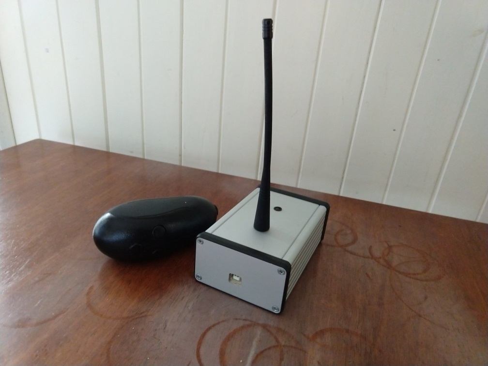 | 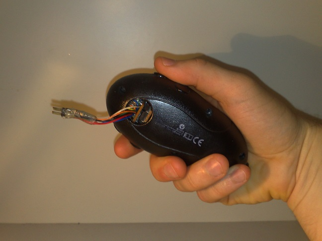 |
| 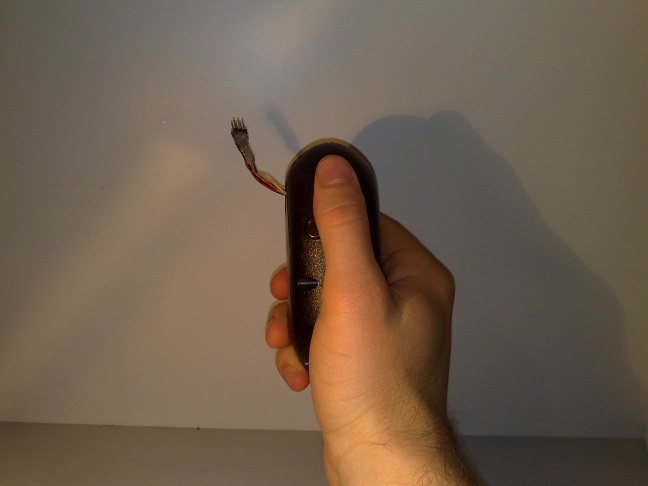 | 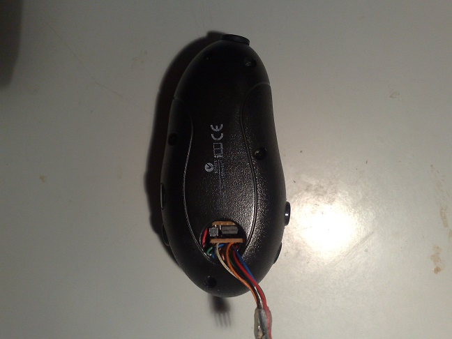 |
| 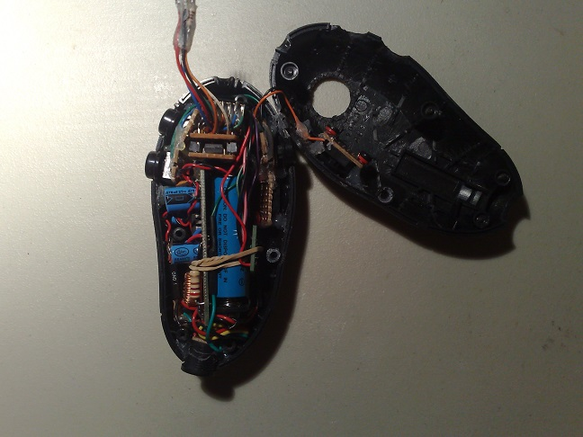 | 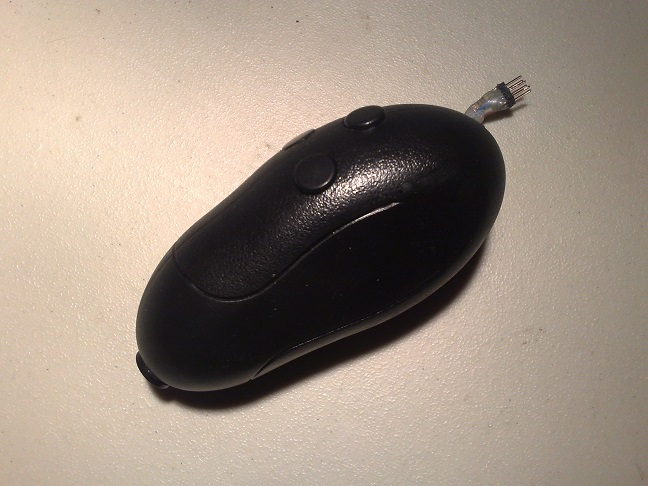 |
| 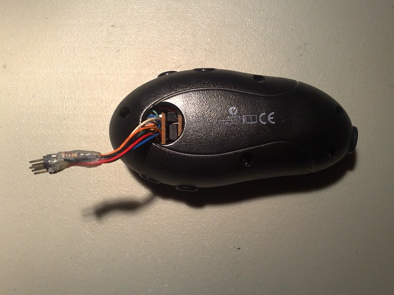 | 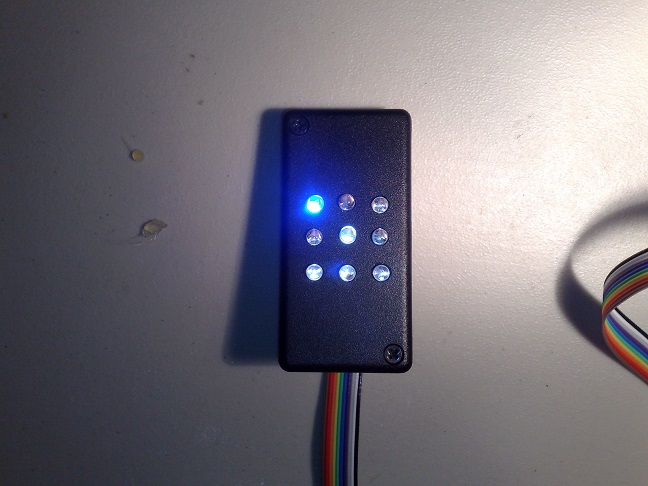 |
| 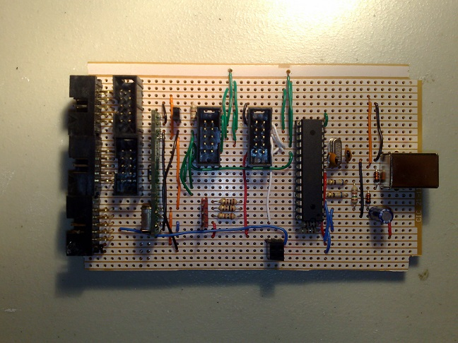 | 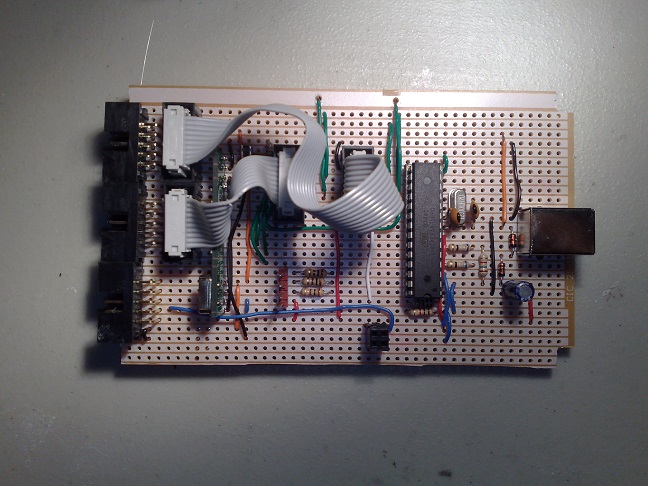 |
| 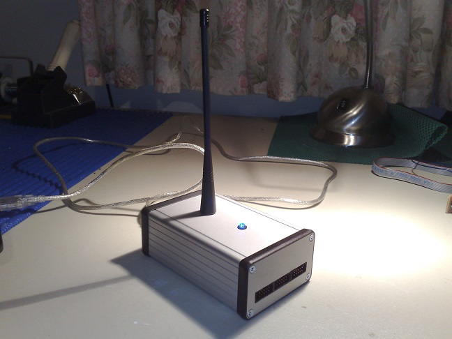 | 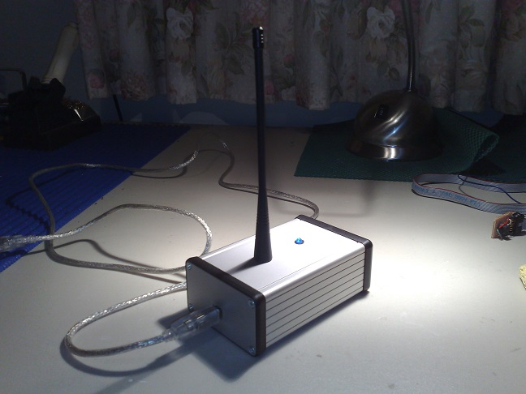 |
| 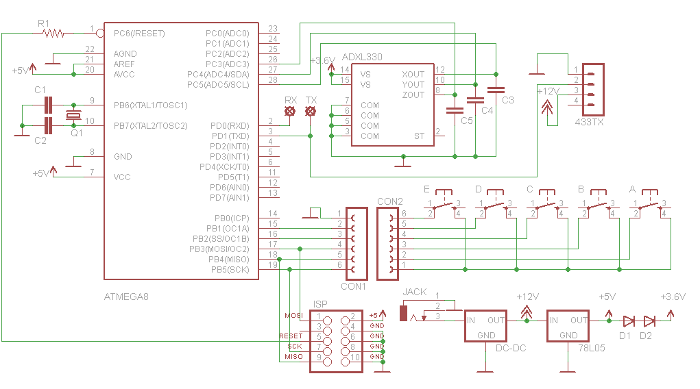 | 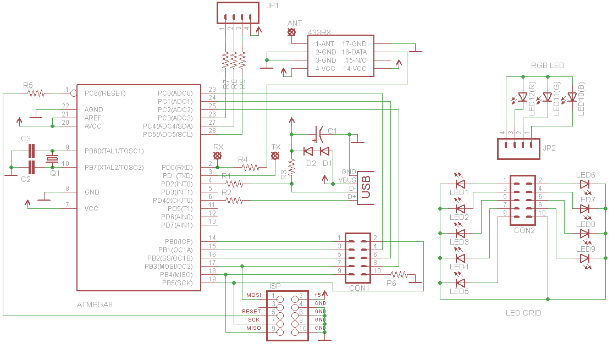 |
{kind=link}
{kind=link}
{kind=link}
{kind=link}
{kind=link}
{kind=link}
{kind=link}
{kind=link}
{kind=link}
{kind=link}
{kind=link}
{kind=link}
{kind=link}
{kind=link}